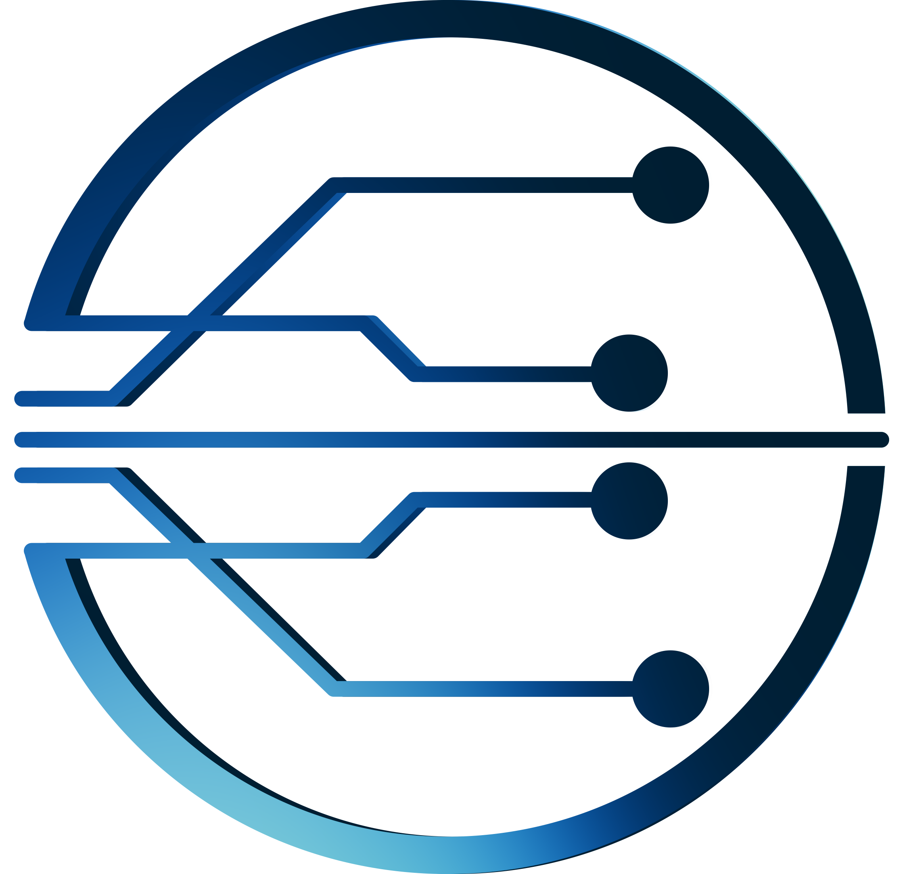

Fases do processo — visão de Workflow
Esta página consolida a cadeia de valor do projeto, do Comercial ao Suporte, com gates claros, papéis explícitos e passagem de bastão controlada. O objetivo é alinhar entendimento, reduzir ruído e elevar previsibilidade operacional na execução da MIB.

Vendas
Decisão de investimento e venda responsável (macroescopo + premissas).
Arquitetura
Validação técnica e operacional. Ajuste formal de escopo quando necessário.
Transição Interna
Projeto internalizado: Comercial + Arquitetura apresentam ao PMO e GPs.
Onboarding
Alinhamento com cliente: governança, papéis, cadência e plano inicial.
Implantação (MIB)
Execução controlada por fases: direcionar, planejar, executar, validar e encerrar.
Suporte
Passagem de bastão formal com base de conhecimento, SLA e aceite.
1) Ciclo de Vendas
Playbook + Pipeline Comercial
Prospecção → Qualificação → Diagnóstico → Proposta → Validação PMO → Fechamento
Owner: Comercial
Gate 1
Atividades-chave
- Qualificação da oportunidade e entendimento do problema.
- Definição de macroescopo, premissas, exclusões e dependências.
- Validação de capacidade de entrega (antes do fechamento).
Entregáveis mínimos
- Proposta/Contrato com macroescopo explícito.
- Premissas, restrições e exclusões formalizadas.
- Riscos comerciais visíveis e aceitos.
Gate 1 — Decisão de Investimento
Pergunta: vale a pena investir e vender esta solução?
2) Ciclo de Arquitetura
Validação técnica e operacional
Arquitetura, integrações, dependências críticas e riscos
Owner: Arquitetura
Gate 2
Atividades-chave
- Desenho da solução e visão de implementação.
- Mapeamento de integrações e dependências críticas.
- Levantamento de restrições e pontos não negociáveis.
Entregáveis obrigatórios
- Documento de arquitetura (visão executável).
- Mapa de integrações/dependências.
- Riscos técnicos/operacionais + mitigação inicial.
- Ajustes formais de escopo quando aplicável.
Gate 2 — Viabilidade da Solução
Pergunta: a solução vendida é tecnicamente e operacionalmente viável?
3) Transição Interna
Apresentação interna (Comercial + Arquitetura → PMO + GPs)
Tradução do projeto, riscos, restrições, premissas e expectativas
Owner: PMO
Gate 3
Atividades-chave
- Racional da venda + expectativas do cliente.
- Arquitetura proposta e implicações.
- Riscos, dependências, restrições e premissas contratuais.
- Indicação de GP e estratégia de condução.
Entregáveis obrigatórios
- Visão consolidada do projeto (1-pager interno).
- Escopo macro internalizado.
- Parecer do PMO: apto / apto com ajustes / retornar.
Gate 3 — Projeto Internalizado
Pergunta: PMO e GPs entendem o projeto o suficiente para assumir a execução?
4) Onboarding
Onboarding com o Cliente (MIB)
Kickoff, governança, responsabilidades, plano inicial em ondas e calendário macro
Owner: PMO
Gate 4
Conteúdos obrigatórios
- Apresentação da MIB e do fluxo de gates.
- Papéis e responsabilidades (cliente × Baumgratz Code).
- Modelo de governança e tomada de decisão.
- Planejamento inicial em ondas + calendário macro.
Entregáveis
- Ata de Kickoff + decisões registradas.
- Mapa de stakeholders validado.
- Governança aprovada.
- Plano inicial e calendário macro validados.
Gate 4 — Pronto para Implantar
Pergunta: cliente, PMO e time estão alinhados e preparados para iniciar a execução?
5) Implantação (MIB)
Fases da Implantação (MIB)
Direcionamento → Planejamento → Execução → Validação → Encerramento
Owner: GP
Gates 5–8
Fases
- Fase 1: Direcionamento Estratégico (Gate 5)
- Fase 2: Planejamento Adaptativo (Gate 6)
- Fase 3: Execução Incremental (Gate contínuo)
- Fase 4: Validação e Estabilização (Gate 7)
- Fase 5: Encerramento (Gate 8)
Entregáveis mínimos por controle
- Backlog por valor/risco e roadmap em ondas
- Indicadores de valor, risco, fluxo e adoção
- Registro de decisões (rastreável)
- Plano de transição para suporte
Governança da Implantação
Regra: gate existe para decisão e proteção de valor (não para burocracia).
6) Transição para Suporte
Passagem de bastão formal
Transferência de conhecimento, SLA, canais e aceite do suporte
Owner: Suporte
Gate Final
Entregáveis
- Documento de transição e orientações operacionais.
- Base de conhecimento mínima e rastreável.
- SLA/canais e critérios de acionamento.
Critérios de prontidão
- Suporte apto a sustentar sem “colar no GP”.
- Cliente sabe acionar e tem expectativas calibradas.
- Riscos residuais conhecidos e aceitos.
Gate Final — Projeto Encerrado
Pergunta: o suporte consegue sustentar sem o time de projeto?